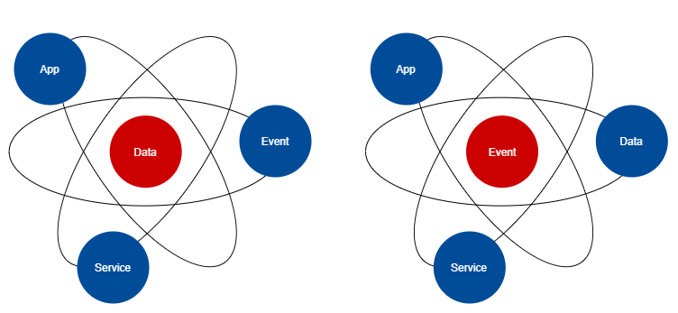

Event-based, API-First Loose-coupling Integration Stack
Being event-driven is different for the sector:

- Instead of focusing on data at rest, we focus on data in flight.
- Instead of preserving data as the first priority, we focus on responding to events as the first priority.
- Instead of data stores being the source of truth, we rely on the log of events as the source of truth.
- Instead of IT as enterprise information repository, we see IT as the sector's digital business nervous system.
The even based, API-first integration design we are proposing is scalable in several ways:
- Resuable - the streaming and REST APIs developed for one integration can be consumed / called in another integration. E.g., develop once, use many times.
- Extensible domain modeling - Stream and REST API schemas can be extended and changed, while maintaining backward compatibility without impacting existing integrations or the associated applications. E.g., rather than creating perfect event schemas and command APIs in one go, the designs and definition can iterate and improve over time.
- Alterable - Integration design and logging / auditing rules can be changed without involving the impacted application teams. E.g., integration logic can be changed independently from application logic, minimizing overhead and dependencies between applications.
- Modular - The event based microservice design means that each domain service and event topic can evolve independently from the rest of domain services. E.g., this means multiple integration work can take place concurrently without impacting each other.
That said, there are many reasons event based, API-first integration design would be a mis-fit. In those cases, the simpler, point-to-point integration design should be considered. We have reviewed the following three documents and pulled out the key cases of mis-fits:
- When Not to Use a service oriented architecture (SOA) - event-based, API-first integrations have their roots from past SOA studies. So the same issues associated with SOAs will extend out to solutions developed using Red Hat Integration tool kit:
- ... when you have a homogeneous IT environment - example: makes sense to not shift and lift JUSTIN and CORNET integrations on to JADE without a strategic reason (e.g. decoupling from tight database reliance).
- ... when true real-time performance is critical - anytime fast response times are critical, the less pieces in the middle the better.
- ... when things don’t change - if an existing (eg high use) integration between two systems are not expected to change in the foreseeable future, there would be little business value in rewriting the integration to leverage JADE.
- ... when tight coupling is a pro, not a con - example, don't put JADE between an application's user interface and its database. The two are naturally tightly coupled for fast / stable iterations.
- Disadvantages of event-driven architecture - This calls out the cons that come with event-based solutions:
- The double edge of loosely-coupled events - more attack vectors; e.g. man in the middle attacks can extend to events.
- Documenting the anticipation of the unknown - the loose coupling nature (event consumers not able to assume the source or the quality of the events) makes it hard to capture all the possible 'whole system' scenarios. Another words, point-to-point and synchronous (API-based) integrations are more predictable.
- Anticipating the unforeseen - testing the unknown is harder because of the above point.
- Hampered error-handling - it can be harder to carry out root cause analysis, because of added complexity with event production, event transmission and event consumption.
- Enterprise Integration Pattern (from ISB Architects, December 2021 copy) – the deck overall favours microservice + event-based + API-first architecture as a way to solve many identified challenges with existing sector integrations. It did call out that implementing an event-based architecture requires a paradigm shift (need to model events as first step, rather than data first.) It includes a decision tree, stating that you should not adopt event-driven microservices architecture if all of the following are true:
- You don't have a new team,
- You don't need high rate of delivery,
- You are not developing a risky service,
- You are not developing a high demand service, and
- You don't require exotic (different?) frameworks